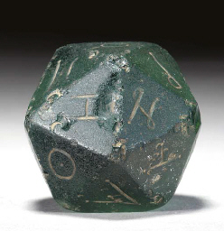

Jack Aubrey, al que algunos imaginan descendiente lejano de Marcus Cubitus o de Julius Humerus, prefirió hacer carrera en la Armada británica antes que en el ejército. Una de las primeras cosas que tuvo que aprender fue el a menudo impreciso sistema de unidades naúticas.
Escriba un programa que convierta una cantidad de centímetros en millas naúticas, cables y brazas (con un decimal). Este programa no tendrá en cuenta la opinión de Jack Aubrey sobre el sistema métrico, que como mínimo podría ser considerada como escéptica.
Se recuerda que aproximadamente una braza son 182,91 cm, un cable son 100 brazas y una milla naútica son 10,125 cables.
CONVERTIDOR DE CENTÍMETROS EN MILLAS NAÚTICAS, CABLES Y BRAZAS Escriba la cantidad de centímetros: -5 Por favor, escriba un número positivo.
CONVERTIDOR DE CENTÍMETROS EN MILLAS NAÚTICAS, CABLES Y BRAZAS Escriba la cantidad de centímetros: 222327 222327 cm son 1 millas naúticas, 2 cables y 3.0 brazas.
CONVERTIDOR DE CENTÍMETROS EN MILLAS NAÚTICAS, CABLES Y BRAZAS Escriba la cantidad de centímetros: 18657 18657 cm son 0 millas naúticas, 1 cables y 2.0 brazas.
CONVERTIDOR DE CENTÍMETROS EN MILLAS NAÚTICAS, CABLES Y BRAZAS Escriba la cantidad de centímetros: 91 91 cm son 0 millas naúticas, 0 cables y 0.5 brazas.
Quizás Jack Aubrey, durante su encierro en Algeciras, pudo pasar las horas muertas jugando solitarios con los dados. Uno de estos solitarios consiste en tirar una cantidad de dados y sumar los puntos de los dados en los que se obtiene el mismo valor. La puntuación obtenida es el valor más alto.
Escriba un programa que solicite el número de dados lanzados y muestre los valores de los dados e indique la puntuación obtenida.
JUEGO DADOS REPETIDOS
¿Cuántos dados quiere tirar? 0
¡Debe tirar al menos un dado!
JUEGO DADOS REPETIDOS
¿Cuántos dados quiere tirar? 5
Dado 1: 4
Dado 2: 2
Dado 3: 2
Dado 4: 4
Dado 5: 2
Ha obtenido 8 puntos.
JUEGO DADOS REPETIDOS
¿Cuántos dados quiere tirar? 6
Dado 1: 3
Dado 2: 3
Dado 3: 4
Dado 4: 5
Dado 5: 3
Dado 6: 4
Ha obtenido 9 puntos.
Volvamos atrás en el tiempo, a nuestros amigos Marcus Cubitus y Julius Humerus, legionarios muy aficionados a los juegos de dados. Esta vez juegan a tirar un dado de cien caras mientras saquen valores menores que el primer valor obtenido. El jugador que tira más veces el dado, gana. Escriba un programa que simule una partida de este juego.
JUEGO DADO A TIERRA
Cubitus: 88 39 44 78 88
Humerus 19 66
Ha ganado Cubitus.
JUEGO DADO A TIERRA
Cubitus: 56 67
Humerus 15 28
Han empatado.
JUEGO DADO A TIERRA
Cubitus: 42 100
Humerus 84 46 9 96
Ha ganado Humerus.
Escriba dos programas que generen las siguientes imágenes a partir de las plantillas siguientes:
<!DOCTYPE html>
<html lang="es">
<head>
<meta charset="utf-8">
<title>Ejercicio 4-1. SVG. Examen. Python</title>
<meta name="viewport" content="width=device-width, initial-scale=1.0">
</head>
<body>
<svg version="1.1" xmlns="http://www.w3.org/2000/svg"
width="320" height="320" viewBox="-10 -10 320 320"
style="border: black 1px solid">
</svg>
</body>
</html>
<!DOCTYPE html>
<html lang="es">
<head>
<meta charset="utf-8">
<title>Ejercicio 4-2. SVG. Examen. Python</title>
<meta name="viewport" content="width=device-width, initial-scale=1.0">
</head>
<body>
<svg version="1.1" xmlns="http://www.w3.org/2000/svg"
width="320" height="320" viewBox="-160 -160 320 320"
style="border: black 1px solid">
</svg>
</body>
</html>
Los colores empleados en estas imágenes son: sandybrown , blue , green , orange , purple , red , yellow
Escriba dos programas que generen las siguientes imágenes a partir de las plantillas siguientes utilizando bucles:
Nota: En el segundo dibujo además del bucle, se debe dibujar un rectángulo.
<!DOCTYPE html>
<html lang="es">
<head>
<meta charset="utf-8">
<title>Ejercicio 5-1. SVG. Examen. Python</title>
<meta name="viewport" content="width=device-width, initial-scale=1.0">
</head>
<body>
<svg version="1.1" xmlns="http://www.w3.org/2000/svg"
width="320" height="320" viewBox="-160 -160 320 320"
style="border: black 1px solid">
</svg>
</body>
</html>
<!DOCTYPE html>
<html lang="es">
<head>
<meta charset="utf-8">
<title>Ejercicio 5-2. SVG. Examen. Python</title>
<meta name="viewport" content="width=device-width, initial-scale=1.0">
</head>
<body>
<svg version="1.1" xmlns="http://www.w3.org/2000/svg"
width="320" height="320" viewBox="-10 -10 320 320"
style="border: black 1px solid">
</svg>
</body>
</html>